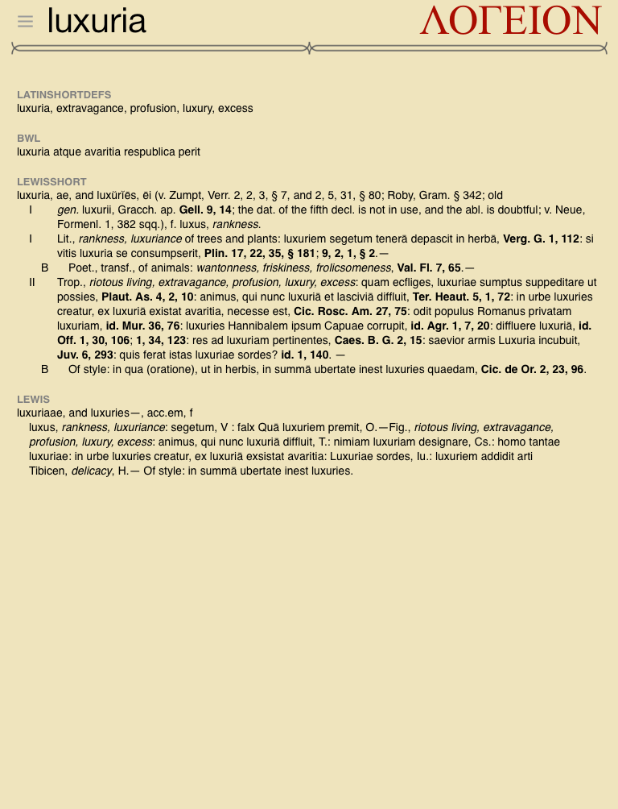
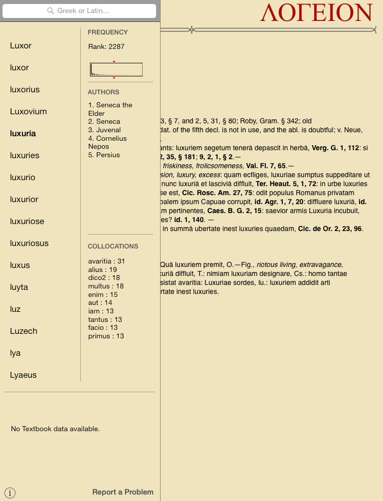
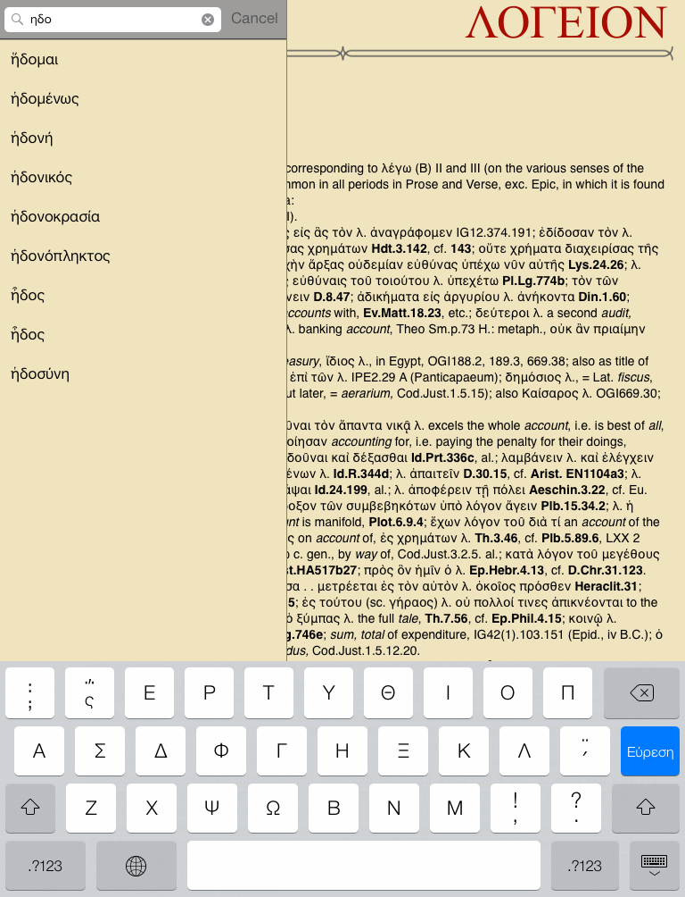
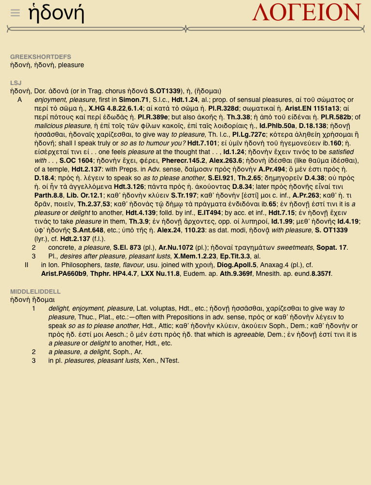
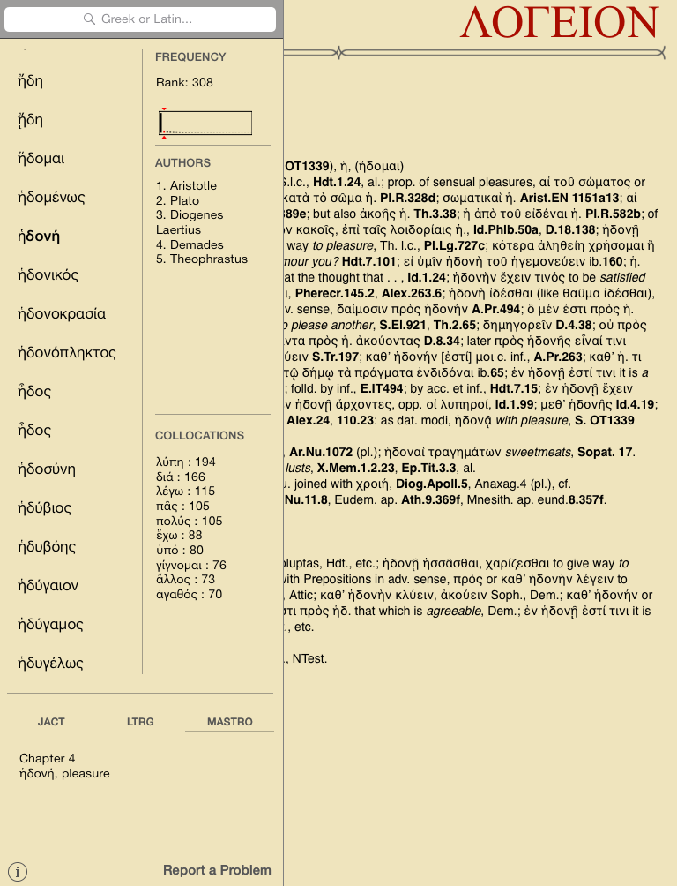
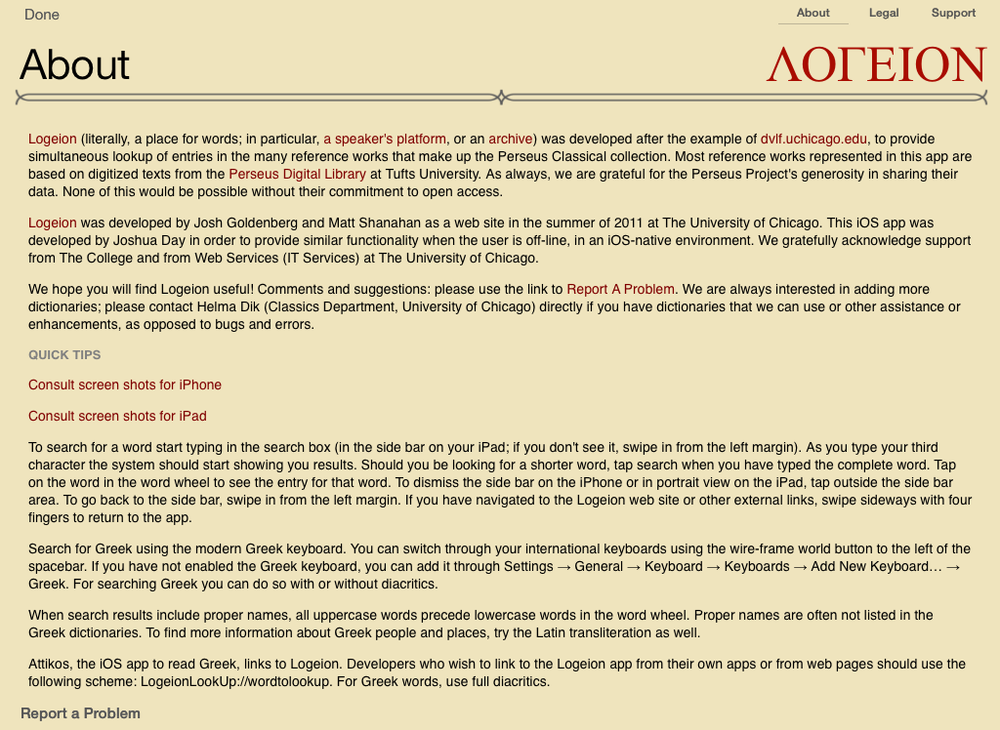

Welcome to Logeion for the iPad! Type in the first few characters in the search box (hidden from view in the side bar at this point) and you can enjoy the luxury of all those dictionaries and reference works on your iPad:

Here you see the side bar (reachable by a tap at top left, or by swiping in from the left). Tap on another word in the word wheel, or type in a different word in the search bar. At the bottom you see that no Latin textbook that we have includes luxuria in its vocabulary.
Tap the little info button at the bottom left to go to our in-app instructions and legal fine print. Tap ‘Report a Problem’ to… report a problem. Tap on the red Logeion logo to go to the Logeion website.

What if you want to look up an equally enjoyable Greek word? No need to bother with diacritics of any kind; however, you should use your iPad’s built-in Greek keyboard to type the Greek letters. Tap on the full word, ἡδονή, in the word list when it appears to see the entry. Tap in the main entry area to dismiss the side bar.

Here it is. Immediately to the left of the headword you see the three grey bars you can tap to get back to the side bar, which will now show you the frequency, collocations, and textbook chapters associated with the words.

Here is the side bar view for ἡδονή. Clearly, philosophers are quite interested in the concept. Note that the subtle line beneath ‘Mastro’ in the bottom left means that you are seeing the entry corresponding to Mastronarde’s Introduction to Attic Greek (2nd ed.). To see the entries for the other textbooks, tap on their abbreviated titles.

Yes, you can use the iPad in landscape view as well! This is the About page in the app which gives you even more tips and tricks.

Below are two shots to show you how to install a Greek keyboard on your iPhone; it works the same way on an iPad. Go to your Settings, select 'General', followed by 'Keyboard' and 'Add New Keyboard, and finally, find the Greek keyboard. With a bluetooth external keyboard, you can even type polytonic Greek.